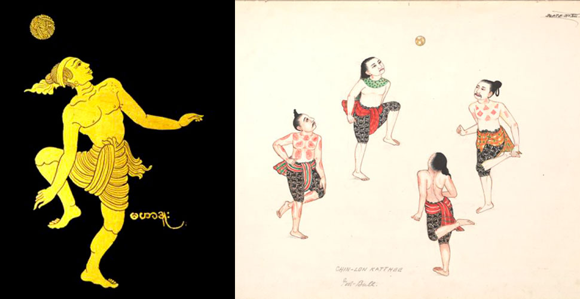

Що таке футбольний фристайл?
24/03/2025
Історія
Коріння футбольного фрістайлу веде у далеке минуле. Його прабатьками можна назвати такі древні азіатські ігри, як чінлон і джіанзі, яким більше 1500 років. Наприклад, чінлон – традиційний і самобутній спорт Бірми (сучасна Мьянма), в який колись грали лише представники королівських сімей. Ця гра з м’ячем є сумішшю спорту і танцю. Сенс чінлона в красі гри кожного учасника, а багато трюків і удари по м’ячу перепліталися з елементами бірманських танців і бойових мистецтв.
Існує думка, що футбольний фрістайл зародився в цирку. У 20-х роках минулого століття італійський цирковий артист Енріко Растеллі прославився своїми неймовірними навичками жонглювання різними предметами, серед яких були і м’ячі. Крім того, вже в той час, він виконував різноманітні трюки з м’ячем граючи у великий футбол.
Енріко Растеллі (1896 – 1931)
Після Другої світової війни шлях Растеллі продовжив німецький жонглер Френсіс Бранн. Саме німець першим виконав трюк «Around The World» (ATW, Вокруг света), який сьогодні такий популярний серед любителів футболу і є базовим трюком футбольного фрістайлу.
Френсіс Бранн (1922 – 2004)
C розвитком телебачення і зростанням популярності великого футболу трюки з м’ячем стали все частіше практикуватися професійними футболістами. По справжньому знаковою фігурою, яку сміливо можна внести в історію фрістайлу, став футболіст Дієго Армандо Марадона. Завдяки своєму таланту відомий аргентинець по праву вважався справжнім чарівником м’яча свого часу.
Дієго Марадона (1960 – 2020)
Першим професійним фристайлером прийнято вважати корейця Hee-Young Woo aka Mr.Woo. Завершивши кар’єру футболіста (грав в Кореї і Німеччині за футбольний клуб «Штуттгарт Кіккерс») Mr.Woo, натхненний талантом Дієго Марадони і його неймовірними здібностями контролювати м’яч, прийняв рішення стати найвідомішим футбольним артистом в світі. У 1989 році він увійшов до Книги рекордів Гіннесса протримавши м’яч на голові 5 годин 06 хвилин і 30 секунд.
Починаючи з 1988 року він демонстрував свої навички володіння м’ячем на численних спортивних заходах, серед яких: офіційна церемонія відкриття Літніх Олімпійських ігор 1988 року в Сеулі, фінали Кубка Німеччини з футболу, матчі англійської Прем’єр-Ліги, Чемпіонати світу з футболу 1990 року в Італії і 1994 року в США. У 2002 році він був офіційним послом Чемпіонату світу з футболу, який проходив в його рідній Південній Кореї, знімався в рекламі Nike «Stickman» з Роналдіньо і багато іншого.
Mr. Woo
Сучасний футбольний фрістайл
Сучасний футбольний фрістайл досить молодий вид спорту. Він почав свій розвиток на початку 2000-х років. Поштовхом до цього стало опубліковане в 2002 році відео Суфіана Тузані aka 2zani з Роттердама. У ньому він виконував не окремі трюки, а невеликі комбінації, так звані комбо. Це відео стало справжньою бомбою в інтернеті і змусило по-новому дивитися на трюки з футбольним м’ячем.
Суфіан Тузані
У 2003 році в Амстердамі пройшов перший світовий чемпіонат з футбольного фрістайлу Masters of the Game World Freestyle Championship 2003.
2006 рік став знаковим для розвитку футбольного фрістайлу та формуванні найскладнішої з його дисциплін – AirMoves. У мережі з’явилося відео шведського фрістайлера Рікарда С’оландера aka Palle з неймовірними комбінаціями, які ніхто до цього не бачив і не робив. Швед став справжньою живою іконою і назавжди вписав своє ім’я в історію футбольного фрістайлу.
Також, Palle став першим в світі фрістайлером виконавшим трюк в три оберти, який тепер носить його ім’я «Palle Around The World (PATW)».
Palle Around The World
В середині 2000-х років компанія Nike випустила легендарну рекламну кампанію Joga Bonito. Завдяки цій серії рекламних роликів, за участю зіркових футболістів, що показують як слід красиво вести гру, Nike просунула фрістайл в маси, популяризуючи видовищні трюки і фінти як частину необхідного арсеналу футболістів.
З 2006 року футбольний фрістайл почав новий виток розвитку завдяки проведенню регулярних турнірів і чемпіонатів, як національних так і міжнародних. Серед найбільш відомих: MotG World Championship 2006, Eurobac 2007, Red Bull Reaccion 2007, Komball 2008, Red Bull Street Style, Super Ball, Freestyle Masters та ін.
У будь-якому виді спорту є ті, хто стояв біля витоків розвитку і сприяв популяризації спорту. Фрістайл не став винятком. Серед найбільш відомих імен першої хвилі, на чиїх відео виросли тисячі нових фрістайлерів по всьому світу: Soufiane Touzani (Голландія), Rickard «Palle» Sjolander (Швеція), Hoai «NamTheMan» Nguyen (Ірландія), Daniel Roseboom (Голландія), John Farnworth (Великобританія), Steve Elias (Канада) Billy Wingrow і Jeremy Linch (Великобританія), Tatsulow (Японія), Abbas Farid (Уельс), Nelson de Kok (Голландія), Abdullah Belabbas (Голландія), Sean Garnier (Франція), Nejad Brajic (Боснія), Pawel Skora (Польща), Suru Tamasz (Угорщина), Szymon Skalski (Польща), Anders Solum (Норвегія) та ін.
Сьогодні, футбольний фрістайл завдяки своїй популярності і доступності не просто розвага, а загальновизнаний масовий рух. Він швидко знайшов своїх шанувальників і стрімко завоював популярність у всьому світі. Це динамічний і видовищний вид спорту. Концепція і філософія фрістайлу спрямовані на пропаганду здорового і активного способу життя, а також розвиток нової прогресивної культури серед представників усіх поколінь, і перш за все, молоді.
Щодо майбутнього… Якщо ти читаєш це, значить тобі цікавий футбольний фрістайл і майбутнє за тобою! Тепер твоя черга робити історію!